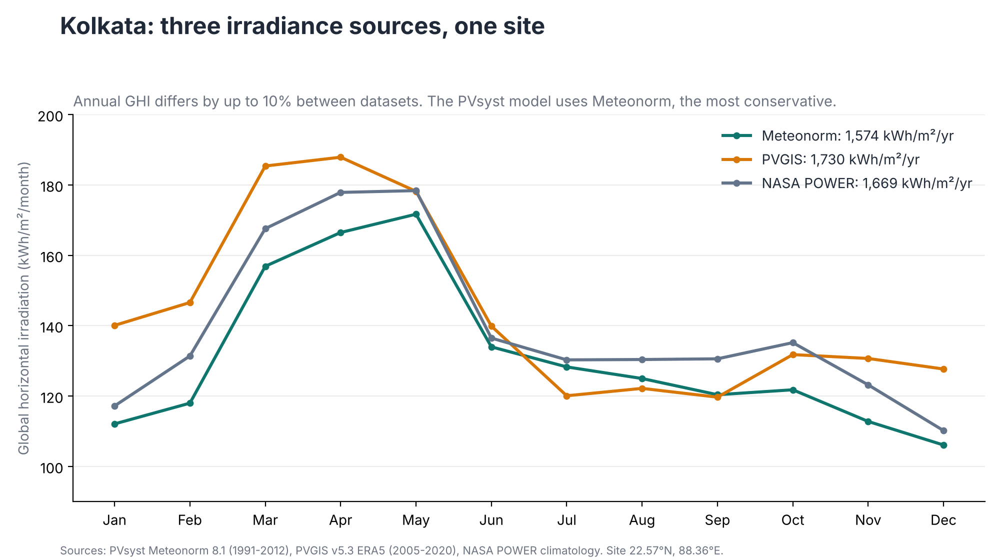
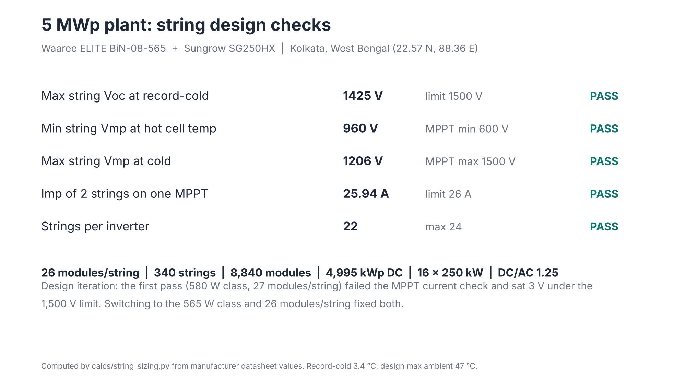
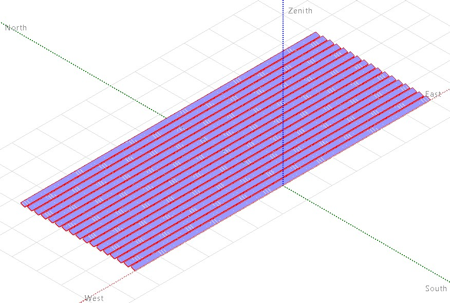
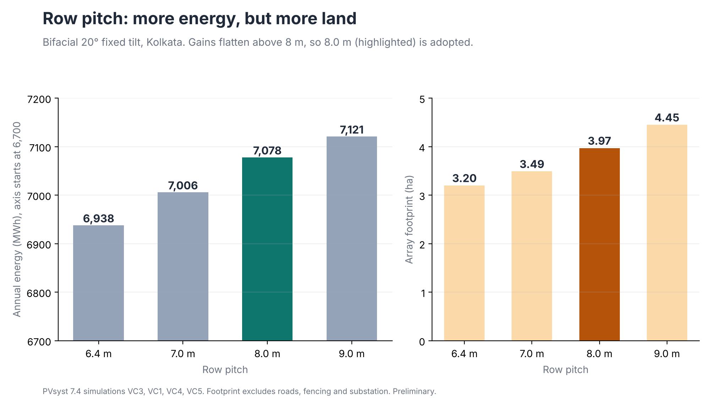
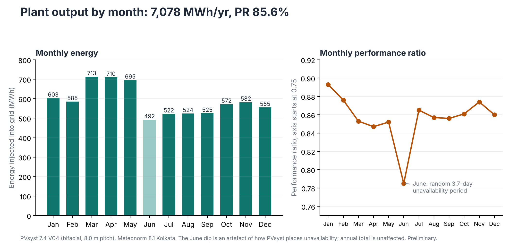
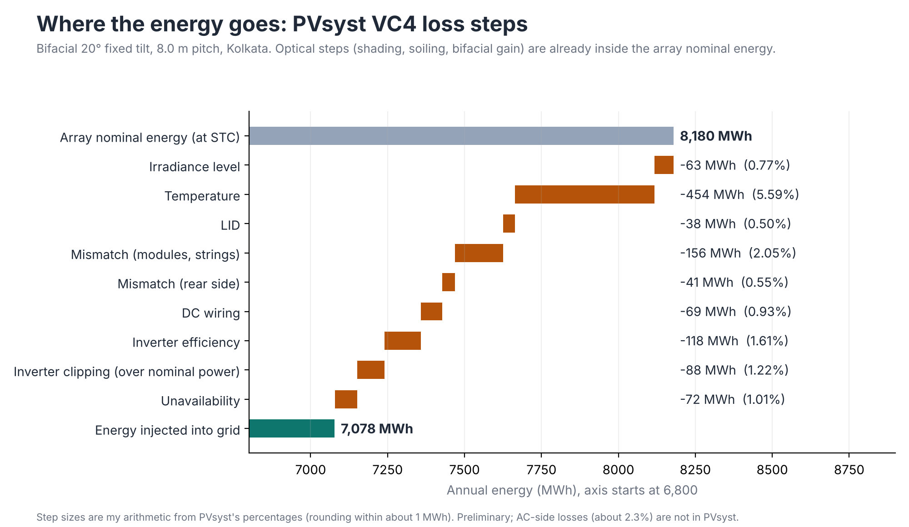
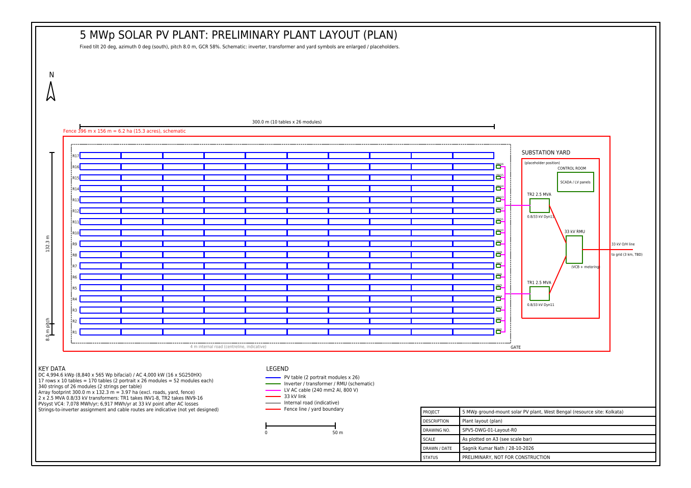
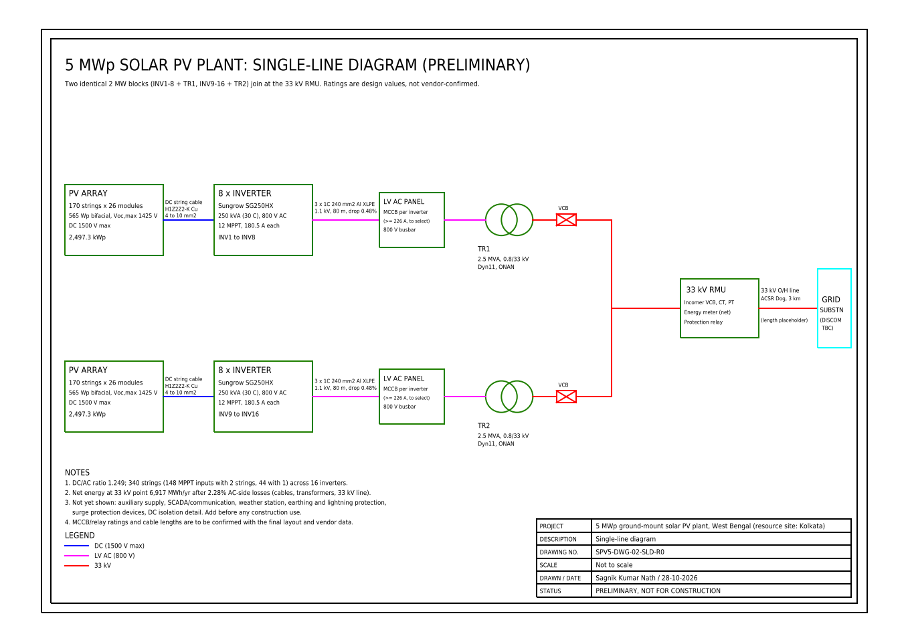

Resource site: Kolkata, West Bengal (22.57 °N, 88.36 °E) | Sagnik Kumar Nath, B.Tech Electrical Engineering, IEM Kolkata | DRAFT, 28 Oct 2026
| Parameter | Value |
|---|---|
| DC / AC capacity | 4,994.6 kWp / 4,000 kW (DC/AC 1.249) |
| Modules | 8,840 × Waaree ELITE BiN-08-565 (565 Wp, N-type TOPCon, bifacial); ALMM/DCR status of this model to be confirmed |
| Inverters | 16 × Sungrow SG250HX (1500 V string inverter) |
| Strings | 26 modules in series, 340 strings |
| Orientation | Fixed tilt 20°, south, row pitch 8.0 m (GCR 58%) |
| Energy (PVsyst) | 7,078 MWh/yr; 1,417 kWh/kWp/yr; PR 85.6% |
| P90 (1-year, assumed uncertainty 6.84%) | 6,458 MWh/yr |
| Energy at the 33 kV point (after AC-side losses of 2.28%) | 6,917 MWh/yr |
| CO₂ avoided, year 1 | about 5,030 t (CEA average factor 0.727 t/MWh) |
| Capex / LCOE | Indicative range ₹3.5 to 4.4 crore/MWp, LCOE ₹3.5 to 4.3/kWh (see section 8 for the limits) |
The project uses Kolkata's climate and coordinates. Kolkata city has no 20 to 25 acre open plots, so the physical plot is still to be chosen on the metropolitan fringe; the weather is essentially the same within about 25 km. Record ambient temperatures from NASA POWER (2001 to 2025): minimum 3.4 °C (sets string Voc), maximum 46.9 °C (sets string Vmp).
Three irradiance sources disagree by up to 10%. Meteonorm 8.1 (lowest) is used in PVsyst, which makes the yield estimate conservative, and the spread is the largest term in the uncertainty budget.

Figure 1. Annual GHI: Meteonorm 1,574, NASA POWER 1,669, PVGIS 1,730 kWh/m².
Modules are 565 Wp rather than 580 Wp because two 580 W strings would draw 26.36 A on one inverter MPPT, above its 26 A limit. The SG250HX has 12 MPPTs with two string inputs each, 600 to 1,500 V.
The string length uses the cold limit: module Voc at 3.4 °C is 54.81 V, so at most 27 modules fit under 1,500 V. 27 modules would reach 1,480 V, only 20 V (1.3%) under the limit, so 26 were chosen for a 5% margin (Voc,max 1,425 V; Vmp range 960 to 1,206 V against the 600 V inverter minimum).
| Check | Result |
|---|---|
| Voc (cold) × 26 ≤ 1,500 V | 1,425 V, pass |
| Vmp (hot, 75.8 °C cell) × 26 ≥ 600 V | 960 V, pass |
| Vmp (cold) × 26 ≤ 1,500 V | 1,206 V, pass |
| Two strings on one MPPT ≤ 26 A | 25.94 A, pass |

Figure 2. String design summary.
Bifacial unlimited-sheds model with a 3D near-shading scene: 17 rows of 520 modules (2 modules in portrait, 4.58 m deep, 1.0 m lower edge). Ground albedo 0.25, bifaciality 80%, rear shading 5%, rear mismatch 10%, free-standing thermal model (Uc 29, Uv 0), soiling 3%, LID 0.5%, mismatch 2%, unavailability 1%.

Figure 3. 3D shading scene (low-resolution working capture).
6.4 m is the minimum pitch with no shading from 9:00 to 15:00 on 21 December. A sweep of four pitches shows the energy gain falling off while land use keeps rising; 8.0 m was adopted. Footprints exclude roads, fencing and the substation.

Figure 4. Energy and land use against row pitch.
| Loss | % | Loss | % |
|---|---|---|---|
| Temperature | 5.59 | Inverter efficiency | 1.61 |
| Soiling (assumed) | 3.00 | Inverter clipping | 1.22 |
| Module and string mismatch | 2.05 | Unavailability | 1.01 |
| IAM | 2.01 | DC wiring | 0.93 |
| Near shading | 1.75 | LID | 0.50 |

Figure 5. Monthly energy and performance ratio (the June dip is an unavailability artefact).
Bifacial gain is +4.4% (monofacial 6,712 vs bifacial 7,006 MWh at 7.0 m). Result: 7,078 MWh/yr, PR 85.65%.

Figure 6. Loss steps from the PVsyst VC4 report (step sizes are my arithmetic from PVsyst percentages).
| Component | σ (%) |
|---|---|
| Irradiance data source | 5.0 |
| Interannual variability | 3.2 |
| Transposition and bifacial model | 2.0 |
| PV model | 2.0 |
| Module data | 1.5 |
| Soiling | 1.0 |
| Availability | 0.5 |
| Combined (root-sum-square) | 6.84 (1-year), 6.13 (10-year) |
P90 = P50 × (1 − 1.2816 σ) = 6,458 MWh/yr (1-year). All σ values are my assumptions, not measured.
Cross-check. NREL SAM (PVWatts v8 on PVGIS ERA5 data) and the PVGIS calculator gave results that were higher than PVsyst's monofacial result (PVsyst came out 4.6% and 6.6% below them) once shading was removed, which is above the 3% target. Scaling SAM's irradiance to Meteonorm level reduced the gap to 0.9% (PVsyst 0.9% above SAM), so the difference comes from the irradiance database, not the PV model. SAM and PVGIS share ERA5, so this check does not prove which database is right.
| Item | Design |
|---|---|
| DC string cable | Copper H1Z2Z2-K; design current 1.25 × Isc × 1.10 = 18.9 A; derating 0.91 (temperature) × 0.80 (grouping); 4 mm² up to about 70 m, 6 mm² to 100 m, 10 mm² to 130 m (drop ≤ 1.0% at Imp) |
| Inverter to transformer | Al XLPE, 240 mm², 3 single-core, 80 m, drop 0.48% at 180.5 A rated |
| Transformers | 2 × 2.5 MVA, 0.8/33 kV Dyn11, 8 inverters each |
| 33 kV evacuation | 33 kV RMU with VCB and metering, then 3 km ACSR Dog overhead line (placeholder), 70 A, drop 0.30% |
PVsyst does not model the AC side. Estimated AC-side losses are 161 MWh/yr (2.28%): cables 33.6, transformer load loss 70.1, transformer no-load 36.8, 33 kV line 20.9 MWh. The load-form factor (0.20) is an assumption. Net energy at the 33 kV point: 6,917 MWh/yr. Cable lengths are placeholders until the layout is drawn.
Both drawings are preliminary and schematic. They were generated from the design numbers with a Python script (calcs/make_drawings.py) and saved as DXF, then opened and saved as DWG in AutoCAD 2027 (education licence). Inverter, transformer and yard symbols are enlarged, the yard position and 33 kV route are placeholders, and string-to-inverter routing is not designed yet.

Drawing 1. Plant layout (plan): 17 rows, 170 tables, 16 inverters, 2 transformers. Fence about 6.2 ha including roads and the yard.

Drawing 2. Single-line diagram. Earthing, lightning protection, auxiliary supply and SCADA are not shown.
Quantities come from the design (8,840 modules, 16 inverters, 2 transformers, 170 tables). Unit costs come from a published indicative guide (taypro.in, June 2026), which is a commercial source, not a regulator benchmark. It was cross-checked against the CTUIL planning benchmark below.
| Case | Capex (₹ crore) | ₹ crore/MWp | LCOE (₹/kWh) |
|---|---|---|---|
| Low | 17.7 | 3.54 | 3.52 |
| Base (25th percentile of ranges) | 22.1 | 4.42 | 4.25 |
| High | 35.4 | 7.08 | 6.47 |
Financial inputs: 10% discount rate, 25 years, 0.4%/yr degradation, O&M ₹5 lakh/MWp/yr, inverter replacement in year 12, no tax or debt. At a tariff of ₹3.00/kWh the base case pays back in about 14 years (project IRR 4.8%).
CO₂ avoided: 0.727 tCO₂/MWh (CEA CO₂ Baseline Database v20.0, FY2023-24 average) gives about 5,030 t in year 1 (5,240 t with the combined-margin factor 0.757). The grid factor will fall over time.
All assumptions with sources are in ASSUMPTIONS.md; code and outputs are in calcs/. Repository: github.com/sagnikvolt/solar-pv-plant-5mwp-wb